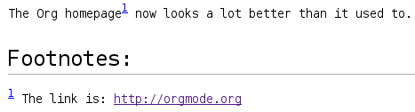
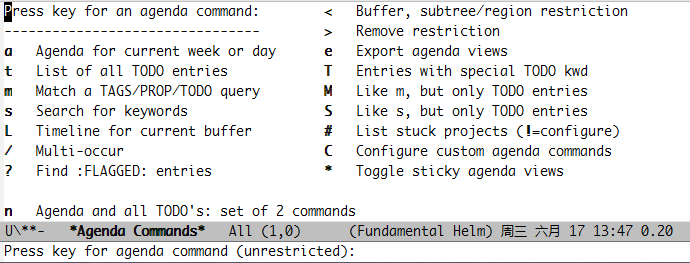
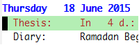
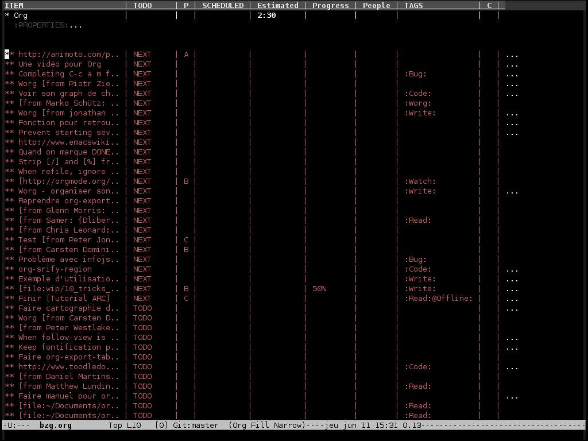
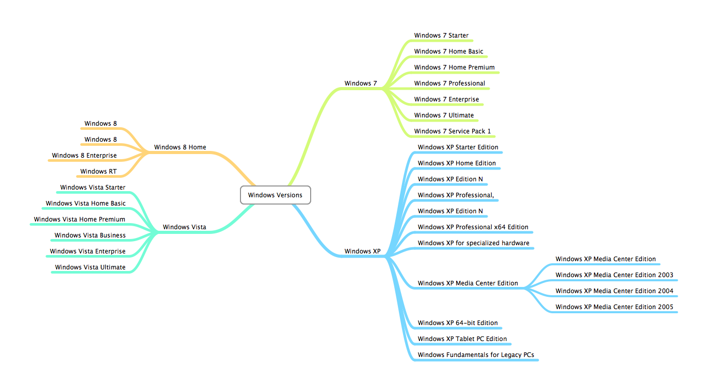

The Org Manual 笔记
Table of Contents
1 基本命令
<TAB>/S-<TAB> org-cycle/org-global-cycle，切换缓冲区标题可见性
C-u <TAB> 当光标不在一个标题上时切换缓冲区标题可见性
,-> OVERVIEW -> CONTENTS -> SHOW ALL --.
'--------------------------------------'
C-u C-u <TAB> org-set-startup-visibility，切换回原缓冲区标题默认可见性
C-u C-u C-u <TAB> show-all，展开所有标题
C-c C-x b org-tree-to-indirect-buffer，将当前标题的所有文字在另一个缓冲区里显示
S-<TAB> 切换不同显示模式
C-c C-n outline-next-visible-heading，移动到下一个标题
C-c C-p outline-previous-visible-heading，移动到上一个标题
C-c C-f org-forward-same-level，移动到下一个同级标题
C-c C-b org-backward-same-level，移动到上一个同级标题
C-c C-u outline-up-heading，移动到上一级标题（如在三级标题，移动到二级标题）
C-c C-j org-goto，进入大纲模式，在此基础上可进行下列操作
<TAB> 展开/收缩当前标题文字
<down>/<up> 上一个/下一个标题
<RET> 选择当前标题，退出大纲模式
/ 搜索
M-<RET> org-insert-heading，将当前行光标右边的文字创建成与当前所在标题同级的标题 C-<RET> org-insert-heading-respect-content，另起一行创建与当前同级的空白标题 M-S-<RET> org-insert-todo-heading，将当前行光标右边的文字创建成与当前所在标题同级的 TODO 标题 C-S-<RET> org-insert-todo-heading-respect-content，另起一行创建与当前同级的 TODO 标题 C-c * org-toggle-heading，将光标所在行变成一个下级标题 M-<left> org-do-promote，当光标在标题时提高该标题等级一级，如原二级标题改为一级标题 M-<right> org-do-demote，当光标在标题时降低该标题等级一级，如原二级标题改为三级标题 M-S-<left> org-promote-subtree，将光标所在标题及其下级所有标题提高一级 M-S-<right> org-demote-subtree，将光标所在标题及其下级所有标题降低一级 C-c ^ org-sort，根据指定的规则进行排序 C-c / org-sparse-tree，根据指定规则查找标题 C-x n s org-narrow-to-subtree，在当前缓冲区仅显示光标所在标题及其下级标题内的所有文字 C-x n w widen，在当前缓冲区显示所有标题文字 M-h org-mark-element，将光标所在标题内的所有文字选中 C-c C-x C-w org-cut-subtree，剪切光标所在标题及其下级标题内的所有文字 C-c C-x M-w org-copy-subtree，拷贝光标所在标题及其下级标题内的所有文字 C-c C-x C-y org-paste-subtree，粘贴光标所在标题及其下级标题内的所有文字 C-c C-x c org-clone-subtree-with-time-shift，拷贝并粘贴指定数量光标所在标题及其下级标题内的所有文字
2 Org 标记
Org 文件开头结构标记
文件标题标记
#+TITLE: This is the title of the document
设置 Org 文件导出的最低层次
#+OPTIONS: H:4 ; 4 表示第 4 层以后的子树不会被导出
设置标题目录显示到第 N 层子树
#+OPTIONS: toc:4 ; 4 表示第 4 层以后的子树不显示在目录上
#+OPTIONS: toc:nil ; 不导出目录
文件内部排版
通常情况下段落至少需要用一个空行分开，如果需要在段落内换行，可以使用 “//” 在每行末尾，同时也可以使用下方的标记：
#+BEGIN_VERSE
Great clouds overhead
Tiny black birds rise and fall
Snow covers Emacs
-- AlexSchroeder
#+END_VERSE
设置缩进
#+BEGIN_QUOTE
Everything should be made as simple as possible,
but not any simpler -- Albert Einstein
#+END_QUOTE
设置居中
#+BEGIN_CENTER
Everything should be made as simple as possible, \\
but not any simpler
#+END_CENTER
设置文字导出不会被显示
#+BEGIN_COMMENT
Everything should be made as simple as possible, \\
but not any simpler
#+END_COMMENT
设置文字显示在一个框中且不受标记语言影响有两种办法
Here is an example
: Some example from a text file.
#+BEGIN_EXAMPLE #+END_EXAMPLE
Org 自带 easy-template，如： <e+TAB 即可自动补全为 #+BEGIN_EXAMPLE #+END_EXAMPLE，e 可以替换成其他关键字的头字母，可用列表如下：
s #+BEGIN_SRC ... #+END_SRC
e #+BEGIN_EXAMPLE ... #+END_EXAMPLE
q #+BEGIN_QUOTE ... #+END_QUOTE
v #+BEGIN_VERSE ... #+END_VERSE
c #+BEGIN_CENTER ... #+END_CENTER
l #+BEGIN_LaTeX ... #+END_LaTeX
L #+LaTeX:
h #+BEGIN_HTML ... #+END_HTML
H #+HTML:
a #+BEGIN_ASCII ... #+END_ASCII
A #+ASCII:
i #+INDEX: line
I #+INCLUDE: line
键入 C-c ; 可以让当前子树导出时不显示并在标题前面添加 COMMENT 关键词
设置代码染色，指定程序语言
#+BEGIN_SRC emacs-lisp -n -r
(save-excursion (ref:sc）
(goto-char (point-min))) (ref:jump）
#+END_SRC
In line [[(sc)]] we remember the current position. [[(jump)][Line (jump)]] jumps to point-min.
-n 显示行号
-r 去除设定的标签显示，如：(ref:sc)，不去除则会在该行代码末尾加上 (sc)
使用 (ref:) 设置好该行代码的标签链接以后即可在文章任意处引用，点击链接可直接跳转到该行代码，另外如果标签链接的语法和程序语言本身冲突，可以使用 -l 切换格式。
1: (save-excursion 2: (goto-char (point-min)))
In line 1 we remember the current position. Line 2 jumps to point-min.
插入文件
插入文件并设置 emacs-lisp 代码染色
#+INCLUDE: "./init.el" src emacs-lisp 有两种关键词可选 src 和 example
设置插入文件的最低等级，1 则代表仅插入一级标题之前的文件正文
#+INCLUDE: "../Helm/Helm.org" :minlevel 1
设置插入文件具体行数
#+INCLUDE: "~/.emacs" :lines "5-10" 插入第 5-10 行，第 10 行不算
#+INCLUDE: "~/.emacs" :lines "-10" 插入第 1-10 行，第 10 行不算
#+INCLUDE: "~/.emacs" :lines "10-" 插入从第 10 行到文件末尾
列表
有序的列表以数字作为标识，如：1.，2.，3.。
无序的列表以“+”，“-”，“*”作为标识，效果相同。
举例
** Lord of the Rings
My favorite scenes are (in this order)
1. The attack of the Rohirrim
2. Eowyn's fight with the witch king
+ this was already my favorite scene in the book
* I really like Miranda Otto.
3. Peter Jackson being shot by Legolas
- on DVD only
He makes a really funny face when it happens.
But in the end, no individual scenes matter but the film as a whole.
Important actors in this film are:
- Elijah Wood :: He plays Frodo
- Sean Austin :: He plays Sam, Frodo's friend. I still remember
him very well from his role as Mikey Walsh in The Goonies.
命令
M-<RET> 另起一行并自动添加上行已有的列表标记
M-S-<RET> 效果同上，但多一个 [ ] 标记，即简单的 TODO 标记
C-c ^ 该命令同样适用于列表排序
M-up/M-down 将列表向上/向下移动一行
M-left/M-right 控制列表缩进
S-left/S-right 转变列表符号，如：-、+、1)、1.、*
注脚
举例
The Org homepage[fn:1] now looks a lot better than it used to.
* Footnotes
[fn:1] The link is: http://orgmode.org
[fn:num] 一个数字注脚，“num”可以是任意数字
[fn:name] 指定名称的注脚
[fn:: ...] LaTex-like 注脚，注脚正文直接在引用的地方给出，如：
[fn:: This is the inline definition of this footnote]
[fn:name: ...] 指定名称的 LaTex-like 注脚
C-c 光标在一个注脚上，创建或跳转到注脚正文
C-c C-x f 直接在当前位置插入一个注脚，并跳转到注脚正文书写位置

字体
*bold* 加粗 /italic/ 斜体 _underlined_ 下划线 =verbatim= 等宽 ~code~ 代码 -------- 五个以上破折号等于水平线
3 Org 表格
表格有关数学部分的内容未加入，数学特渣，有兴趣的人可以单独阅读“3.5 The spreadsheet”和“3.6 Org-Plot”这两段。
例 1：
| Name | Phone | Age | |-------+-------+-----| | Peter | 1234 | 17 | | Anna | 4321 | 25 |
| Name | Age | Phone |
|---|---|---|
| Peter | 17 | 1234 |
| Anna | 25 | 4321 |
例 2：
| N | N^2 | N^3 | N^4 | sqrt(n) | sqrt[4](N) | |---+-----+-----+-----+---------+------------| | / | < | | > | < | > | | 1 | 1 | 1 | 1 | 1 | 1 | | 2 | 4 | 8 | 16 | 1.4142 | 1.1892 | | 3 | 9 | 27 | 81 | 1.7321 | 1.3161 | |---+-----+-----+-----+---------+------------|
| N | N2 | N3 | N4 | sqrt(n) | sqrt(N) |
|---|---|---|---|---|---|
| 1 | 1 | 1 | 1 | 1 | 1 |
| 2 | 4 | 8 | 16 | 1.4142 | 1.1892 |
| 3 | 9 | 27 | 81 | 1.7321 | 1.3161 |
Org 表格默认是没有垂直水平线的（因为制作人觉得那样更美观），如果希望加上垂直水平线，你需要手动添加“/”和“< >”。“/”表示单列垂直水平线，“< >”表示在规定的几列建一条垂直水平线。
例 3：
+---------+ | | | Foo | | | +----+----+---+ |Bar |Baz | | | | +----+--------+
|
Foo |
|
|
Bar |
Baz |
表头设置
#+CAPTION: This is the caption for the next table (or link)
#+NAME: tab:basic-data
| Name | Age | Phone |
|-------+-----+-------|
| Peter | 17 | 1234 |
| Anna | 25 | 4321 |
设定 #+NAME 以后可以在文件任意位置引用，格式如： [[tab:basic-date][表格链接演示]]
| Name | Age | Phone |
|---|---|---|
| Peter | 17 | 1234 |
| Anna | 25 | 4321 |
命令：
C-c | org-table-create-or-convert-from-region，选择一块区域或在光标出自动创建指定大小的表格 C-c C-c org-table-align，重新对齐表格 <TAB> org-table-next-field，对齐表格并新建一格 S-<TAB> org-table-previous-field，对齐表格且光标前移一格 <RET> org-table-next-row，新建一行 S-<RET> org-table-copy-down，新建一行并复制原光标所在格的信息，如是数字，自动进位 M-a/M-e org-table-beginning/end-of-field，移动到光标所在格开头或末尾 C-c ^ org-table-sort-lines，表格排序 C-c + org-table-sum，如所在数字格自动计算所在列数字总和 C-c - org-table-insert-hline，插入一行水平线，如：|-------+-----+-------| C-c <RET> org-table-hline-and-move，插入水平线并新建一行表格，光标自动移动到新行 M-<left>/<right> org-table-move-column-left/right，将该列表格左移/右移 M-<up>/<down> org-table-move-row-up/down，将该行表格上移/下移 M-S-<left>/<right> org-table-delete/insert-column，该列表格删除/插入新的一列 M-S-<up>/<down> org-table-kill/insert-row，该行表格删除/插入新的一行 C-c ` org-table-edit-field，在一个单独的缓冲区里编辑光标所在格信息，按 C-c 提交 C-c } 切换表格显示，注明表格 X、Y 坐标 M-x org-table-import 将一个文件作为表格插入 org 文件 M-x org-table-export 将一个表格指定文件名导出
4 Org 链接
基本格式：
[[link][description]] 或者 [[link]] 链接 显示的名称 直接显示链接 如： [[http://www.gnu.org/software/emacs/][GNU Emacs]] 或者：[[http://www.gnu.org/software/emacs/]]
链接格式：
http://www.astro.uva.nl/~dominik 网络链接 doi:10.1000/182 数字对象标识符链接（digital object identifier） file:/home/dominik/images/jupiter.jpg 绝对地址文件链接 /home/dominik/images/jupiter.jpg 同上 file:papers/last.pdf 相对地址文件链接 ./papers/last.pdf 同上 file:/myself@some.where:papers/last.pdf 远程地址文件链接 /myself@some.where:papers/last.pdf 同上 file:sometextfile::NNN 指定文件指定行链接 file:projects.org 另一个 org 文件链接 file:projects.org::some words 在指定 org 文件中全文搜索指定文字的链接 file:projects.org::*task title 在指定 org 文件中搜索指定标题的链接 file+sys:/path/to/file 用系统默认程序打开指定文件的链接 file+emacs:/path/to/file 用 emacs 打开指定文件的链接 docview:papers/last.pdf::NNN 用 emacs doc-view mode 打开 pdf 指定页数的链接 id:B7423F4D-2E8A-471B-8810-C40F074717E9 通过编号打开指定标题的链接 news:comp.emacs 新闻组链接 mailto:adent@galaxy.net 邮箱链接 mhe:folder MH-E 文件夹链接，关于 MH-E 详见：http://mh-e.sourceforge.net/ mhe:folder#id MH-E 文件 ID 链接 rmail:folder RMAIL 文件夹链接 rmail:folder#id RMAIL 文件 ID 链接 gnus:group Gnus 组链接 gnus:group#id Gnus 文章链接 bbdb:R.*Stallman 带正则表达式的 BBDB 链接，关于 BBDB 详见：http://bbdb.sourceforge.net/ irc:/irc.com/#emacs/bob IRC 链接 info:org#External links IRC 节点链接 shell:ls *.org shell 命令链接 elisp:org-agenda Elisp 命令链接 elisp:(find-file-other-frame "Elisp.org") 同上
命令：
C-c l org-store-link，储存当前位置的一个链接（全局），精确到行，可以在 org 文件以外的缓冲区使用 C-c C-l org-insert-link，创建一个链接，可以是之前储存的链接；如光标在现有链接下则编辑该链接 C-u C-c C-l 创建一个当前文件路径下任意文件的链接 C-c C-o org-open-at-point，打开现有的一个链接 C-c C-x C-v org-toggle-inline-image，开关内嵌的图片，预览或以链接的形式显示 C-c %/& org-mark-ring-push/goto，在当前位置暂存一个链接/跳转到暂存的位置 C-c C-x C-n/C-p org-next/previous-link，跳转到上一个/下一个链接 <BACKSPACE> 在链接末尾按退格键编辑一个链接
org 文件中的搜索链接
[[file:~/code/main.c::255]] 跳转到指定 org 文件第 255 行
[[file:~/xx.org::My Target]] 在指定 org 文件中搜索指定文字
[[file:~/xx.org::*My Target]] 在指定 org 文件中搜索指定标题
[[file:~/xx.org::/regexp/]] 在指定 org 文件中进行正则表达式搜索
[[file:~/xx.org::#my-custom-id]] 在指定 org 文件中搜索属性值为 my-custom-id
my-custom-id 指当一个 headline 有 CUSTOM_ID 属性时,会创建一个连接到该自定义 ID 的链接(亦有全局性 ID，但无法自定义)，如：
* Introduction
:PROPERTIES:
:CUSTOM_ID: introduction ; 链接可以写成 [[file:./example.org::#introduction]]
:END:
在 org 文件外部使用 org 链接语法
(global-set-key "\C-c L" 'org-insert-link-global) (global-set-key "\C-c o" 'org-open-at-point-global)
在 .emacs 中定义常用的链接缩写
(setq org-link-abbrev-alist
'(("bugzilla" . "http://10.1.2.9/bugzilla/show_bug.cgi?id=")
("url-to-ja" . "http://translate.google.fr/translate?sl=en&tl=ja&u=%h")
("google" . "http://www.google.com/search?q=")
("gmap" . "http://maps.google.com/maps?q=%s")
("omap" . "http://nominatim.openstreetmap.org/search?q=%s&polygon=1")
("ads" . "http://adsabs.harvard.edu/cgi-bin/nph-abs_connect?author=%s&db_key=AST")))
在单个 org 文件中定义常用的链接缩写
#+LINK: bugzilla http://10.1.2.9/bugzilla/show_bug.cgi?id= #+LINK: google http://www.google.com/search?q=%s
5 Org TODO
基本格式：
在标题前标记“TODO”即表示一个 TODO：
*** TODO Write letter to Sam Fortune
TODO 状态：
,-> (unmarked) -> TODO -> DONE --.
'--------------------------------'
在两个子任务完成之前，母任务无法完成：
* TODO Blocked until (two) is done
** DONE one
** TODO two
* Parent
:PROPERTIES:
:ORDERED: t
:END:
** TODO a
** TODO b, needs to wait for (a)
** TODO c, needs to wait for (a) and (b)
C-c C-x o org-toggle-ordered-property，在当前条目创建 ORDERED 特性
C-u C-u C-u C-c C-t 无视任何阻止改变当前条目 TODO 状态
如果需要更为复杂的依赖关系，比如不同标题或文件之间的依赖，可以下载 org-depend.el
命令：
C-c C-t org-todo，将当前标题转为一个 TODO，可用于切换 TODO 状态
C-u C-c C-t 输入关键字选择 TODO 状态，TODO/DONE
S-<right>/<left> 快速切换 TODO 状态
S-M-<RET> org-insert-todo-heading，直接插入一个 TODO 项目
C-c / t org-show-todo-tree，在缓冲区中只显示 TODO 项目
T 搜索某个特定的 TODO
C-c a t agenda 命令，显示全局 TODO 列表（在所有 agenda 文件中查找）
在 .emacs 中设置更多的 TODO 状态
设置更多 TODO 状态：
(setq org-todo-keywords
'((sequence "TODO" "FEEDBACK" "VERIFY" "|" "DONE" "DELEGATED")))
设置不同人的 TODO，利用下面的 3 个命令可直观管理每个人需做的事情：
(setq org-todo-keywords '((type "Fred" "Sara" "Lucy" "|" "DONE")))
C-num C-c C-t 快速设置 TODO 状态，如 C-3 C-c C-t 就可以直接跳到 VERIFY/Lucy 状态
C-num C-c / t 在缓冲区中只显示指定状态的项目，num 即数字
C-num C-c a t 显示全局指定状态的项目
在 .emacs 中设置多个不同的状态
(setq org-todo-keywords
'((sequence "TODO" "|" "DONE")
(sequence "REPORT" "BUG" "KNOWNCAUSE" "|" "FIXED")
(sequence "|" "CANCELED")))
C-u C-u C-c C-t \
C-S-<right> |- 切换不同子集的 TODO 状态
C-S-<left> /
S-<right>/<left> 无视子集切换 TODO 状态，如按 S-<right> 从 DONE 切换到 REPORT
在 .emacs 中设置状态快捷键
(setq org-todo-keywords
'((sequence "TODO(t)" "|" "DONE(d)")
(sequence "REPORT(r)" "BUG(b)" "KNOWNCAUSE(k)" "|" "FIXED(f)")
(sequence "|" "CANCELED(c)")))
C-c C-<key> 根据设置好的快捷键切换至指定 TODO 状态
在 .emasc 中设置 TODO 状态不同的高亮颜色
(setq org-todo-keyword-faces
'(("TODO" . org-warning) ("STARTED" . "yellow")
("CANCELED" . (:foreground "blue" :weight bold))))
在单个 Org 文件中设置
#+TODO: TODO FEEDBACK VERIFY | DONE CANCELED #+TYP_TODO: Fred Sara Lucy Mike | DONE #+TODO: TODO | DONE #+TODO: REPORT BUG KNOWNCAUSE | FIXED #+TODO: | CANCELED
当 TODO 完成时自动记录时间戳
(setq org-log-done 'time)
当 TODO 完成时在时间戳下方提示创建笔记，使用“Closing Note”标题
(setq org-log-done 'note)
C-c C-z 手动对当前子树添加一条带时间戳的笔记，格式如下：
* This is a headline
:LOGBOOK:
- Note taken on [2015-06-26 五 09:49] \\
This is a LOGBOOK drawer
:END:
跟踪 TODO 进度，添加时间戳及状态更新。“@”标题每次状态更新插入一条笔记，“！”表示每次状态更新插入时间戳
(setq org-todo-keywords
'((sequence "TODO(t)" "WAIT(w@/!)" "|" "DONE(d!)" "CANCELED(c@)")))
#+TODO: TODO(t) WAIT(w@/!) | DONE(d!) CANCELED(c@)
同样的你也可以在单个标题中设置，举例：
* DONE Log each state with only a time
:LOGBOOK:
- State "DONE" from "WAIT" [2015-05-18 周一 09:36]
- State "WAIT" from "TODO" [2015-05-18 周一 09:36]
:END:
:PROPERTIES:
:LOGGING: TODO(!) WAIT(!) DONE(!) CANCELED(!)
:END:
* WAIT Only log when switching to WAIT, and when repeating
:LOGBOOK:
- State "WAIT" from "TODO" [2015-05-18 周一 09:38] \\
This is a note
:END:
:PROPERTIES:
:LOGGING: WAIT(@) logrepeat
:END:
* WAIT No logging at all
:PROPERTIES:
:LOGGING: nil
:END:
设置一个长期有效并且每日进行的 TODO，使用“habit”特性
* TODO Shave SCHEDULED: <2009-10-17 Sat .+2d/4d> ;; +2d/4d 表示每 2-4 天 - State "DONE" from "TODO" [2009-10-15 Thu] - State "DONE" from "TODO" [2009-10-12 Mon] - State "DONE" from "TODO" [2009-10-10 Sat] - State "DONE" from "TODO" [2009-10-04 Sun] - State "DONE" from "TODO" [2009-10-02 Fri] - State "DONE" from "TODO" [2009-09-29 Tue] - State "DONE" from "TODO" [2009-09-25 Fri] - State "DONE" from "TODO" [2009-09-19 Sat] - State "DONE" from "TODO" [2009-09-16 Wed] - State "DONE" from "TODO" [2009-09-12 Sat] :PROPERTIES: :STYLE: habit :LAST_REPEAT: [2009-10-19 Mon 00:36] :END:
TODO 优先级格式（仅在 agenda 中显示差异）
*** TODO [#A] Write letter to Sam Fortune
[#A]/[#B]/[#C] A 最高级，B 默认优先级（无标识即表示是 B 级），C 最低级
C-c , org-priority，设置条目优先级，键入 A-C 并按 <SPC> 结束
S-<up>/<down> org-priority-up/down，提高/降低条目优先级
在 org 文件表头设置多个优先级别
#+PRIORITIES: A B C D E
显示任务进度，在条目尾端添加 [%] 或 [/]
* Organize Party [33%]
** TODO Call people [1/2]
*** TODO Peter
*** DONE Sarah
** TODO Buy food
** DONE Talk to neighbor
C-c 更新条目进度（光标在[]中间时使用）
自动更新进度，在 .emacs 中写入
(defun org-summary-todo (n-done n-not-done)
"Switch entry to DONE when all subentries are done, to TODO otherwise."
(let (org-log-done org-log-states) ; turn off logging
(org-todo (if (= n-not-done 0) "DONE" "TODO"))))
(add-hook 'org-after-todo-statistics-hook 'org-summary-todo)
另一种轻量级的 TODO 表现方式 - checkboxes，在条目前方添加 [X]/[ ]
* TODO Organize party [2/4]
- [-] call people [1/3]
- [ ] Peter
- [X] Sarah
- [ ] Sam
- [X] order food
- [ ] think about what music to play
- [X] talk to the neighbors
C-c C-c org-toggle-checkbox，切换任务完成/未完成
M-S-<RET> org-insert-todo-heading，插入一个条目
6 Dates and times
基本格式
一般样式：
* Meet Peter at the movies
<2006-11-01 Wed 19:15>
* Discussion on climate change
<2006-11-02 Thu 20:00-22:00>
周期性重复，显示在 agenda 中
* Pick up Sam at school
<2007-05-16 Wed 12:30 +1w> ;表示每周三重复一次
N days(d),weeks(w),months(m),years(y)
规定日期范围，用“--”连接
* Meeting in Amsterdam
<2004-08-23 Mon>--<2004-08-26 Thu>
非活动时间戳，不会显示在 agenda 上
* Gillian comes late for the fifth time
[2006-11-01 Wed]
日记式语法单位条目，支持 emacs calendar/diary 包
* 22:00-23:00 The nerd meeting on every 2nd Thursday of the month
<%%(diary-float t 4 2)>
命令
C-c . org-time-stamp，提示输入日期并插入时间戳 C-c ! org-time-stamp-inactive，功能同上，但不显示在 agenda 中 C-u C-c ./! 功能同上，但包括日期和时间 C-c < org-date-from-calendar，直接插入当日日期时间戳 C-c > org-goto-calendar，访问当前日期的日历 C-c C-o org-open-at-point，访问日期时间戳或范围点给出的 agenda S-<left>/<right> org-timestamp-down/up-day，将当前日期戳增加/减少一天，如 30 号变 29 号，29 号变 30 号 S-<up>/<down> org-timestamp-up/down，增加/减少光标所在部分时间戳时间，可以是年、月、日、小时、分钟
Org 允许的日期缩写
先假设今天是 2006-06-13，以下是各种缩写的解释
3-2-5 ⇒ 2003-02-05
2/5/3 ⇒ 2003-02-05
14 ⇒ 2006-06-14
12 ⇒ 2006-07-12
2/5 ⇒ 2007-02-05
Fri ⇒ 默认日期后最近的周五
sep 15 ⇒ 2006-09-15
feb 15 ⇒ 2007-02-15
sep 12 9 ⇒ 2009-09-12
12:45 ⇒ 2006-06-13 12:45
22 sept 0:34 ⇒ 2006-09-22 0:34
w4 ⇒ ISO week for of the current year 2006
2012 w4 fri ⇒ Friday of ISO week 4 in 2012
2012-w04-5 ⇒ 同上
此外还可以使用相对应的日期
+0 ⇒ 今天
. ⇒ 今天
+4d ⇒ 之后第 4 天
+4 ⇒ 同上
+2w ⇒ 之后两周
++5 ⇒ 默认日期之后第 5 天
+2tue ⇒ 现在开始第二个星期二
-wed ⇒ 上周
指定时间范围
11am-1:15pm ⇒ 11:00-13:15
11am--1:15pm ⇒ 同上
11am+2:15 ⇒ 同上
calendar 中的命令
. 回到今天
<RET> 在日历中选择一个日期
mouse-1 选择并点击一个日期
C-f/b 向前/向后一天
C-n/p 向前/向后一周
M-{/} 向前/向后一月
C-x [/] 向前/向后一年
>/< 滚动一个月
M-v/C-v 滚动三个月
C-a/e 到一周开始/结束
M-a/e 到一月开始/结束
M-</> 到一年开始/结束
日程安排特殊 Properties 关键词
*** TODO write article about the Earth for the Guide
DEADLINE: <2004-02-29 Sun> ; DEADLINE 表示截止日期
; DEADLINE: <2004-02-29 Sun -5d> ; 表示在 Agenda 视图中提前 5 天显示
The editor in charge is [[bbdb:Ford Prefect]]
*** TODO Call Trillian for a date on New Years Eve.
SCHEDULED: <2004-12-25 Sat> ; SCHDULED 表示预计日期
; SCHEDULED: <2004-12-25 Sat -2d> ; 表示推迟 2 天
C-c C-d org-deadline，设置截止的日期
C-c C-s org-schedule，设置预计的日期
C-c / d org-check-deadlines，检查带有截止日期关键字的条目，加 C-u 则显示所有 agenda 文件
C-c / b org-check-before-date，检查指定日期以前带有截止日期或预计日期关键字的条目
C-c / a org-check-after-date，检查指定日期之后带有截止日期或预计日期关键字的条目
clock 计时功能
.emacs 中写入
(setq org-clock-persist 'history)
(org-clock-persistence-insinuate)
举例
* TODO dsf
:LOGBOOK:
CLOCK: [2015-05-31 周日 21:11]--[2015-05-31 周日 21:12] => 0:01
:END:
C-c C-x C-i org-clock-in，开始计时
C-c C-x C-o org-clock-out，结束计时
C-c C-x C-q org-clock-cancel，取消计时
C-c C-x C-d org-clock-display，在标题上摘要显示当前缓冲区每个子树的计时时间
C-c C-x C-x org-clock-in-last，再次计时之前最后一次计时的任务
/添加 C-u 前缀则列出该文件曾经计时过的条目，指定后开始计时/
C-c C-x C-e org-clock-modify-effort-estimate，设置该条目最迟计时到什么时间
C-c C-x C-t org-toggle-time-stamp-overlays，切换已定制好的日期显示格式
C-c C-x C-z org-resolve-clocks，列出 aganda 中所有 clock in 的条目
i/q Ignore this question; the same as keeping all the idle time.
k/K Keep X minutes of the idle time (default is all). If this
amount is less than the default, you will be clocked out
that many minutes after the time that idling began, and then
clocked back in at the present time.
g/G Indicate that you "got back" X minutes ago. This is quite
different from 'k': it clocks you out from the beginning of
the idle period and clock you back in X minutes ago.
s/S Subtract the idle time from the current clock. This is the
same as keeping 0 minutes.
C Cancel the open timer altogether. It will be as though you
never clocked in.
j/J Jump to the current clock, to make manual adjustments.
C-c C-c/C-c C-y org-evaluate-time-range，手动修改已计时完成的时间戳后更新使用时间
colock 计时报告
C-c C-x C-r 生成一张当前任务的计时报告，如
#+BEGIN: clocktable :maxlevel 2 :scope subtree
#+CAPTION: Clock summary at [2015-05-31 周日 21:32]
| Headline | Time |
|--------------+--------|
| *Total time* | *0:14* |
|--------------+--------|
| TODO dsf | 0:14 |
C-c C-c/C-c C-x C-u org-dblock-update，更新已生成的计时报告，光标需在 #+BEGIN 上开始
C-u C-c C-x C-u 更新所有已生成的计时报告
可用字段列表
:maxlevel 表格水平列数设置，默认 2
:scope 该表生成的范围
nil 当前缓冲区或选中的区域
file 整个文件
subtree 光标所在标题及其下属标题 ; #+BEGIN: clocktable :scope subtree :link t :formula %
treeN 光标所在标题周围指定数量的一级标题，如 tree 3
tree 标题周围的一级标题
agenda 所有 agenda 文件 ; #+BEGIN: clocktable :scope agenda :block lastweek :compact t
("file"..) 扫描指定文件
file-with-archives 当前文件及其档案
agenda-with-archives 所有 agenda 文件及其档案
:block 指定生成范围的时间
2007-12-31 New year eve 2007 ; #+BEGIN: clocktable :tstart "<2006-08-10 Thu 10:00>"
2007-12 December 2007 ; :tend "<2006-08-10 Thu 12:00>"
2007-W50 ISO-week 50 in 2007
2007-Q2 2nd quarter in 2007
2007 the year 2007
today, yesterday, today-N 相对今天
thisweek, lastweek, thisweek-N 相对这周
thismonth, lastmonth, thismonth-N 相对这月
thisyear, lastyear, thisyear-N 相对这年
使用 S-<left>/<right> 转变
:tstart 指定开始的时间，如 <-2w> ; #+BEGIN: clocktable :tstart "<-1w>" :tend "<now>"
:tend 指定结束的时间，如 <now>
:wstart 本周开始的那天
:mstart 本月开始的那天
:step 用周或者天拆分表格， :block、:tstart、:tend 必须指定好
:stepskip0 不显示零时间的计时
:fileskip0 忽略无用的文件
:tags 根据指定 tags 导出
还有可以自定义表格形式的字段
:emphasize When t, emphasize level one and level two items.
:lang Language85 to use for descriptive cells like "Task".
:link Link the item headlines in the table to their origins.
:narrow An integer to limit the width of the headline column in
the org table. If you write it like ‘50!’, then the
headline will also be shortened in export.
:indent Indent each headline field according to its level.
:tcolumns Number of columns to be used for times. If this is smaller
than :maxlevel, lower levels will be lumped into one column.
:level Should a level number column be included?
:compact Abbreviation for :level nil :indent t :narrow 40! :tcolumns 1
All are overwritten except if there is an explicit :narrow
:timestamp A timestamp for the entry, when available. Look for SCHEDULED,
DEADLINE, TIMESTAMP and TIMESTAMP_IA, in this order.
:properties List of properties that should be shown in the table. Each
property will get its own column.
:inherit-props When this flag is t, the values for :properties will be inherited.
:formula Content of a #+TBLFM line to be added and evaluated.
As a special case, ‘:formula %’ adds a column with % time.
If you do not specify a formula here, any existing formula
below the clock table will survive updates and be evaluated.
:formatter A function to format clock data and insert it into the buffer.
估计工作量
C-c C-x e org-set-effort，键入一个时间设定工作量，可以通过 agenda 的 e 键调出查看，如：
* NEXT Document my use of org-mode
:PROPERTIES:
:CLOCK_MODELINE_TOTAL: today
:Effort: 1:00
:END:
C-c C-x C-e org-clock-modify-effort-estimate，修改条目已设定的工作量
通过 column 视图可以直观地查看
#+PROPERTY: Effort_ALL 0 0:10 0:30 1:00 2:00 3:00 4:00 5:00 6:00 7:00
#+COLUMNS: %40ITEM(Task) %17Effort(Estimated Effort){:} %CLOCKSUM
在 .emacs 中设置到达预估工作量时的提醒声音
(require 'org-clock)
(setq org-clock-sound t)
通过为任务增加 Effort 属性，可以为任务设置一个评估的工作量，若 clock tracking 的时间超过了这个评估的工作量，则会提出警告。
相对计时
C-c C-x . org-timer，插入一个相对时间，第一次执行会将时间重置为 0 并开始计时
C-c C-x - org-timer-item，将当前计时当作列表插入，如
- 0:00:15 ::
- 0:00:08 ::
M-<RET> org-insert-item，一旦已经插入 list item，则可以直接插入新的 list item
C-c C-x , org-timer-pause-or-continue，停止/继续计时
C-u C-c C-x , 停止相对计时器
C-c C-x 0 org-timer-start，重置相对计时器（结束的时间不插入到 buff）
C-u C-C C-x 0 重置到指定的时间
C-c C-x ; org-timer-set-timer，设定一个倒计时
7 Capture - Refile - Archive
Capture .emacs 配置
(setq org-default-notes-file (concat org-directory "/notes.org")) (define-key global-map "\C-cc" 'org-capture)
命令
C-c c org-capture，.emacs 中配置全局快捷键 C-c C-c org-capture-finalize，保存记录并退出 capture buffer C-c C-w org-capture-refile，将该层标题变成指定一级标题下的子树 C-c C-k org-capture-kill，取消 capture 记录，回到原先状态 C-u C-c c 定位到指定 capture 模板最后保存的地方 C-u C-u C-c c 在当前 buffer 打开最后一次 capture 保存的位置 C-0 C-c c 在当前 buffer 插入指定 capture 记录 在 agenda 中按 k 也可以调用 org-capture 命令，模板中的日期会插入光标所在位置的日期而非当前日期
capture 模板
使用 C-c c C 可以利用 customize 界面自定义模板，或者直接将模板样式写入 .emacs，如：
(setq org-capture-templates
'(("t" "Todo" entry (file+headline "D:/Dropbox/todo.org" "Tasks")
"* TODO %?\n %i\n %a")
("j" "Journal" entry (file+datetree "D:/Dropbox/journal.org")
"* %?\nEntered on %U\n %i\n %a")
("n" "Note" entry (file+datetree "D:/Dropbox/note.org")
"* %? :NOTE:\n%U\n%a\n")
))
同时可以定义单独的按键来直接启动相应的模板
(define-key global-map "\C-ct"
(lambda () (interactive) (org-capture nil "t"))) ; 启动 todo 模板
模板样式
%[file] 插入文件
%(sexp) 插入 sexp 的返回值，sexp 必须返回字符串
%<...> 插入时间戳信息
%t 插入日期
%T 插入日期与时间
%u, %U 同上，但时间戳用 [] 括起来
%i 调用 capture 命令时有选中的内容则插入选中的内容
%a 注记，通常是 org-store-link 创建的链接
%A 类似 %a，但提示输入链接的描述
%l 类似 %a，但仅插入文本链接
%c 当前 kill-ring 中的内容
%x 粘贴板的内容
%k 当前计时任务标题
%K 当前计时任务链接
%n 用户名，变量 user-full-name
%f capture 命令调用时当前 buffer 对应文件名
%F 类似 %f，但显示全路径
%:keyword Specific information for certain link types, see below.
%^g 提示输入 tag，target file 中的列表作为可选项
%^G 类似 %^g，但是有 agenda 中所有注册的文件中的 tag 作为可选项
%^t 类似 %t,但提示手动输入日期，类似还有 %^T， %^u， %^U You may define a prompt like %^{Birthday}t.
%^C 提示插入哪个 kill-ring 的内容
%^L 类似 %^C，但插入为链接
%^{prop}p Prompt the user for a value for property prop.
%^{prompt} prompt the user for a string and replace this sequence with it.
You may specify a default value and a completion table with
%^{prompt|default|completion2|completion3...}.
The arrow keys access a prompt-specific history.
%\n Insert the text entered at the nth %^{prompt}, where n is
a number, starting from 1.
%? After completing the template, position cursor here.
还有些变量与特定的 link type 关联
Link type | Available keywords
---------------------------------+----------------------------------------------
bbdb | %:name %:company
irc | %:server %:port %:nick
vm, vm-imap, wl, mh, mew, rmail | %:type %:subject %:message-id
| %:from %:fromname %:fromaddress
| %:to %:toname %:toaddress
| %:date (message date header field)
| %:date-timestamp (date as active timestamp)
| %:date-timestamp-inactive (date as inactive timestamp)
| %:fromto (either "to NAME" or "from NAME")94
gnus | %:group, for messages also all email fields
w3, w3m | %:url
info | %:file %:node
calendar | %:date
Attachments 给条目增加附件
所谓附件可以存储在 Org 文件所属目录下的 data 子目录，文件和目录均可作为附件添加到某条目上去，整个子树也同时可以使用相同的附件目录
C-c C-a org-attach，附件相关接口命令，弹出命令列表
a org-attach-attach，选择附件文件附加到条目，并移动文件到存放附件的目录中去，如：
* example :ATTACH:
:PROPERTIES:
:Attachments: desktop.ini
:ID: d8552553-087e-43e5-8aae-99e8174e976b
:END:
c/m/l 拷贝/移动/链接指定文件存放到条目存放附件的目录中
n org-attach-new，创建一个 buffer 作为新附件
z org-attach-sync，同步附件目录的条目信息，手工移动文件到附件目录时有用
o org-attach-open，打开当前条目的附件，如多个，提示打开那个
O org-attach-open-in-emacs，强制用 emacs 打开附件
f org-attach-reveal，打开当前条目用来存放附件的目录
F org-attach-reveal-in-emacs，用 emacs 打开存放附件的目录
d org-attach-delete-one，删除某个附件
D org-attach-delete-all，删除所有附件
s org-attach-set-directory，为条目指定存放附件的目录
i org-attach-set-inherit，所有子节点使用父节点的附件目录，即 :ATTACH_DIR_INHERIT: t
设置通过 RSS FEEDS 更新条目
在 .emacs 中写入
(setq org-feed-alist
'(("Slashdot"
"http://rss.slashdot.org/Slashdot/slashdot"
"~/txt/org/feeds.org" "Slashdot Entries")))
C-c C-x g org-feed-update-all，同步 RSS 到 org 文件
C-c C-x G org-feed-goto-inbox，提示输入 RSS 名称并跳转到对应 org 文件
如出现同名 heading，Org 会创建名为 FEEDSTATUS 的 drawer，在其中存储 RSS 的状态，避免相同的 RSS 多次添加，向实现该功能需添加 FEEDSTATUS 到 Org 文件的 drawer 列表中，如：
#+DRAWERS: LOGBOOK PROPERTIES FEEDSTATUS
同时可以参考 org-feed.el 和 org-feed-alist 文件
编辑 Tree
C-c C-w org-refile，移动当前条目到指定条目中去，变成它的子节点 C-c M-w org-copy，同上，但是拷贝，不删除原条目 C-2 C-c C-w 把当前条目移动到正在计时的条目中去 C-0 C-c C-w 清理 target cache
Archive 存档
C-c C-x C-a org-archive-subtree-default，将已完成的项目移动到 Archive 文件 C-c C-x C-s / C-c $ org-archive-subtree，将光标位置开始的所有子节点归档 C-u C-c C-x C-s 检查当前条目是否有可以归档的子节点 内部归档不会将条目另外放置到其他文件，只对该条目添加 ARCHIVE 的 TAGS，同时 agenda 中不再显示。另需注意的是内部归档后该条目将只显示标题，内容无法再读取。 C-c C-x a org-toggle-archive-tag，为当前条目添加/去除 ARCHIVE 标签 C-c C-x A org-archive-to-archive-sibling，移动当前条目到单独的 Archive 节点中 C-TAB org-force-cycle-archived，将已经被归档的条目展开，显示内容 C-u C-c C-x a 检查当前条目是否有可以归档的子节点
8 Org Agenda View
Agenda 日程视图可以将多个 org 文件中的 GTD 相关条目整合在一起，用户可以自行选择不同的视图，也可以对条目进行修改/标记。
基本命令
C-c [ org-agenda-file-to-front，将当前文件添加到 agenda 列表最前端（如已在列表中则移动到列表最前面）
文件前后顺序代表着在 Agenda 视图中的排序顺序
C-c ] org-remove-file，将当前文件从 agenda 列表中删除
C-'/, org-cycle-agenda-files，循环显示 agenda 中的文件
C-c b org-iswictchb，指定 agenda 列表中的文件名，打开该文件
C-c C-x < org-agenda-set-restriction-lock，显示 agenda 视图范围在当前子树，如光标在文件第一个标题上则表示范围限制在当前文件（原列表无效）
C-c C-x > org-agenda-remove-restriction-lock，去除 C-c C-x < 的范围限制
C-c C-x C-c org-agenda-columns，Agenda 的 columns 视图
当使用 speedbar.el，在 epeedbar 窗口下键入 </> 也有 agenda 视图范围限制、去除限制的作用
agenda 视图命令列表（C-c a 进入）
a 创建一个以周/日为单位的 agenda 视图
. org-agenda-goto-today，跳转到今天
n/p org-agenda-next/previous-line，上移/下移一行
f/b org-agenda-later/earlier，下翻/上翻一周
j org-agenda-goto-date，跳转到指定的具体日期
v org-agenda-view，显示日/周/月/年...视图，会跳出一个窗口指定
<SPC> org-agenda-show-and-scroll-up，在另一个窗口显示原始文件并跳转到光标所在条目的位置
G org-agenda-toggle-time-grid，切换是否显示时间线
l org-agenda-log-mode，在 agenda 切换是否显示已经完成的条目
D org-agenda-toggle-diary，切换是否列入 Diary
r org-agenda-redo，刷新视图，比如在使用 S-<right>/<left> 之后刷新显示
A 选择另外一个视图，相当于再按一次 C-c a
o 关闭其他窗口
q 关闭 Agenda 窗口
e 关闭 Agenda 窗口以及所有相关窗口
t org-agenda-todo，切换条目状态（原始文件也会更改）
a org-agenda-archive，将该条目存档，默认存档位置在原始文件目录中
: org-agenda-set-tags，设置光标所在条目 TAGS
z org-agenda-add-note，添加该条目笔记
I/O/X org-agenda-clock-in/out，条目开始/结束/取消计时
- org-agenda-priority-down，切换条目优先级
k org-agenda-capture，类似 org-capture
> org-agenda-date-prompt，更改条目具体时间
S-<right>/<left> org-agenda-do-date-later/earlier，条目时间戳向前/向后一天，可前缀数字指定增加/减少的天数
C-k org-agenda-kill，删除条目，连同子树
C-_ org-agenda-undo，撤销操作
C-c C-s org-agenda-schedule，设置 SCHEDULED 预计时间
C-c C-d org-agenda-deadline，设置 DEADLINE 截止时间
C-c C-a org-attch，org 附件相关命令
/ org-agenda-filter-by-tag，agenda 条件筛选
<SPC> 筛选所有带 TAGS 的条目
<TAB> 筛选剩余指定 TAGS 的条目
+/- 增加/缩小筛选范围
/ 取消所有筛选，回到默认 agenda 视图
\ org-agenda-filter-by-tag-refine，缩小已有的 agenda 条件筛选
< org-agenda-filter-by-category，按照种类（category，下文有介绍）筛选，光标必须在某个种类上才能筛选
^ org-agenda-filter-by-top-headline，只显示一级条目
= org-agenda-filter-by-regexp，正则表达式筛选 agenda 视图
~ org-agenda-limit-interactively，交互式地进行关键词筛选
| org-agenda-filter-remove-all，删除所有筛选，回到默认 agenda 视图
m/* org-agenda-bulk-mark/mark-all，标记一个条目/所有可见条目
% org-agenda-bulk-mark-regexp，正则表达式标记条目
u/U org-agenda-bulk-unmark/remove-all-makrs，撤销当前标记/所有标记
B org-agenda-bulk-action，批量操作
* 切换到持久的标记
$ 存档所有已标记的条目
t 切换已标记条目状态
+ 添加已标记条目 TAGS
- 删除已标记条目 TAGS
s 设置安排已标记条目日期
d 设置截止已标记条目日期
t/T 创建一个所有 TODO/指定关键字（TODO、DONE...）的 agenda 视图
m/M 创建一个指定 TAGS 下所有条目的/指定 TAGS 但仅显示 TODO 条目的 agenda 视图
匹配语法，举例如下：
'work' 选择 :work: 标签
'work&boss' 选择 :work: 和 :boss: 标签
'+work-boss' 选择 :work: 标签的同时去除带 :boss: 的标签
'work|laptop' 选择 :work: 标签或者 :laptop: 标签
'work|laptop+night' 同上，但要求有 :laptop: 标签的同时必须有 :night: 标签
'work+TODO="WAITING"' 选择 :work: 标签且带有特定 TODO 关键词 WAITING 的条目
'work+TODO="WAITING|home+TODO="WAITING"' 选择 :work: 以及 :home: 标签中带有特定 TODO 关键词 WAITING 的条目
s/S 创建一个指定关键词（可正则）下所有条目/指定关键词下 TODO 条目的 agenda 视图
L 创建一个时间线的 agenda 视图
#/! 创建一个以未完成的工程（即文件一级标题没有 DONE）为列表的 agenda 视图
/ 在 agenda 文件列表中搜索任意字词（可正则），并在一个窗口中显示出来

导出 Agenda 视图
C-x C-w org-agenda-write，将 Agenda 视图写入文件，后缀名可以是 .html .ps .ics 以及纯文本
C-c a e org-store-agenda-views，导出所有 Agenda 条目
设置导出样式
(setq org-agenda-exporter-settings
'((ps-number-of-columns 2)
(ps-landscape-mode t)
(org-agenda-add-entry-text-maxlines 5)
(htmlize-output-type 'css)))
设置指定文件名导出
(setq org-agenda-custom-commands
'(("X" agenda "" nil ("agenda.html" "agenda.ps"))
("Y" alltodo "" nil ("todo.html" "todo.txt" "todo.ps"))
("h" "Agenda and Home-related tasks"
((agenda "")
(tags-todo "home") ; 条件筛选后导出
(tags "garden"))
nil
("~/views/home.html"))
("o" "Agenda and Office-related tasks"
((agenda)
(tags-todo "work")
(tags "office"))
nil
("~/views/office.ps" "~/calendars/office.ics"))))
设定 agenda 类别，如：
#+CATEGORY: Thesis ; 设定类别的文字最好不要超过 10 个字符
在 agenda 中不同颜色表示任务不同状态
blue 当天任务未完成 Green 当天任务已完成 Yellow 明天需要完成该任务 Red 当天任务已过期
emacs 配置文件设置
(setq org-agenda-start-day "+10d") ; 按 C-c a a 进入时将显示未来 10 天的日程，关键词可以是 d/w/m/y 对应 day/week/month/year
(setq org-agenda-custom-commands ; 设定 agenda 中时常搜索的某一个特定词语
'(("f" occur-tree "FIXME") ; 按 C-c a f 直接进入日程表创建稀疏树搜索“FIXME”关键词
("x" agenda) ; 按 C-c a x 搜索本星期/天的日程条目
("w" todo-tree "WAITING") ; 按 C-c a w 在 todo 稀疏树视图中搜索 WAITING 关键词
("h" . "HOME+Name tags searches") ; 定义 C-c a h 意义
("hl" tags "+home+Lisa"))) ; 按 C-c a h l 搜索 TAGS 关键词 home 和 Lisa
(setq org-agenda-custom-commands ; 组合条件筛选
'(("h" "Agenda and Home-related tasks" ; 带有 home 和 garden 标签的 TODO 日程视图
((agenda "")
(tags-todo "home")
(tags "garden")))
("o" "Agenda and Office-related tasks" ; 带有 work 和 office 标签的 TODO 日程视图
((agenda "")
(tags-todo "work")
(tags "office")))
("n" search "" ; 仅在 notes.org 文件中搜索
((org-agenda-files '("~org/notes.org"))
(org-agenda-text-search-extra-files nil)))))
8.1 Calendar/Diary 支持
基本使用
C-a 移动到当前周的第一天 C-e 移动到当前周的最后一天 M-a 移动到当前月的第一天 M-e 多动到当前月的最后一天 M-< 移动到当前年的第一天 M-> 移动到当前年的最后一天 g d 移动到一个特别的日期 d 显示被选中的日期的所有事件 s 显示所有事件，包括过期的，未到期的等等 i d 为当天日期添加一个事件 i w 为当天周创建一个周事件 i m 为当前月创建一个月事件 i y 为当前年创建一个年事件 i a 为当前日期创建一个周年纪念日 i c 创建一个循环的事件
Agenda 视图下 Calendar 命令
c org-agenda-goto-calendar，打开 calendar；如果在 calendar 中时按 c，打开当前光标日期的 Agenda 视图 i org-agenda-diary-entry，插入一则 Diary
emacs 配置文件设置
(setq org-agenda-include-diary t) ; 将 Calendar/Diary 中的日程同样显示在 agenda 中
; c 在 Calendar 和 Agenda 之间切换
; i 添加一个新的条目
9 Org Tags
基本格式
* Meeting with the French group :work: ** Summary by Frank :boss:notes: *** TODO Prepare slides for him :action:
定义所需用到的 TAG
在单个 ORG 文件中定义所需用到的 TAGS
#+FILETAGS: :Peter:Boss:Secret:
#+TAGS: @work(w) @home(h) @tennisclub(t) \n laptop(l) pc(p)
“\n”表示不同组的 TAGS
#+TAGS: { @work(w) @home(h) @tennisclub(t) } laptop(l) pc(p)
“}”表示不相容的两组 TAGS
在 .emacs 中定义全局 TAGS
(setq org-tag-alist '(("@work" . ?w) ("@home" . ?h) ("laptop" . ?l)))
在 .emacs 中定义两组不相容的 TAGS，使用关键词 startgroup 和 endgroup
(setq org-tag-alist '((:startgroup . nil)
("@work" . ?w) ("@home" . ?h)
("@tennisclub" . ?t)
(:endgroup . nil)
("laptop" . ?l) ("pc" . ?p)))
定义需用到的快捷键
a-z 直接插入已定义的 TAGS
<TAB> 切换到手动输入 TAGS
<SPC> 清空所有 TAGS
! 关闭或开启互不相容的 TAGS 标记
q/C-g 退出设置
命令
C-c C-c/C-c C-q org-set-tags-command，为当前标题添加一个 TAGS C-c / m or C-c \ org-match-sparse-tree，搜索给定的关键字 TAGS C-c a m org-tags-view，在 agenda 视图中搜索所有有关指定 TAGS 的条目 C-c a M org-tags-view，在 agenda 视图中搜索所有有关指定 TAGS 的条目但只显示 TODO 项
TAGS 群组
#+TAGS: { @read : @read_book @read_ebook } ; 该群组包括三个 TAGS
(setq org-tag-alist '((:startgroup . nil)
("@read" . nil)
(:grouptags . nil) ; 该功能通过 grouptags 实现
("@read_book" . nil)
("@read_ebook" . nil)
(:endgroup . nil)))
10 Org Properties and columns
Properties 直译为“属性”、“特性”，大致功能有二：
- 好比 tags，但只需定义一个值。比如维护一个软件版本，用 tags 的话需要定义 :release1: :release2:，但如果使用 Properties 的话只需定义一个值 :Release:，这样在不同的子树会有不同的定义。
- 基本的数据库功能。比如整理一堆音乐 CD，属性可以定义为唱片集、艺术家、发布日期、轨道数等等。
columns 视图可以很方便地编辑、查看 Properties
基本格式
* CD collection
:PROPERTIES:
:NDisks_ALL: 1 2 3 4 ;设定范围之内的磁盘数量
:Publisher_ALL: "Deutsche Grammophon" Philips EMI ;设定指定的出版商
:END:
** Classic
*** Goldberg Variations
:PROPERTIES: :PROPERTIES: 开始
:Title: Goldberg Variations
:Composer: J.S. Bach
:Artist: Glen Gould
:Publisher: Deutsche Grammophon
:NDisks: 1
:END: :END: 介绍
通过 :key_ALL: 可以设定特定的值 :key:，该特性设定层条目以下所有子条目都使用该特性。比如有一堆 CD 盘，想事先设定它们可能的磁盘数量和出版商
设定文件内的所有条目具有指定的特性
#+PROPERTY: NDisks_ALL 1 2 3 4
+ 号代表追加特性
#+PROPERTY: var foo=1
#+PROPERTY: var+ bar=2 ;现 var 特性具有两个值：foo=1、bar=2
* CD collection
** Classic
:PROPERTIES:
:GENRES: Classic
:END:
*** Goldberg Variations
:PROPERTIES:
:Title: Goldberg Variations
:Composer: J.S. Bach
:Artist: Glen Gould
:Publisher: Deutsche Grammophon
:NDisks: 1
:GENRES+: Baroque ;该条目定义特性为 Calssic Baroque
:END:
命令
C-M-i pcomplete，在 : 之后键入，补全指定的值
C-c C-x p org-set-proerty，设置该条目指定的特性
C-u M-x org-insert-drawer RET 设置一个初始的特性，上面的命令同样有该功能
C-c C-c org-property-action，执行光标所在特性
:NDisks_ALL: 3 ;该条目键入 C-c
;Property Action: [s]et [d]elete [D]elete globally [c]ompute
;键入 s Property [NDisks_ALL]: 键入 RET
;NDisks_ALL value [3]: 键入 4
:NDisks_ALL: 4
C-c / p 搜索指定特性及其值，以稀疏树的方式呈现
特殊 Properties 比如之前的 TODO 优先级设定也是一种特殊 Properties
ID 用于同步在一个全局的唯一 ID
iCalendar 或 MobileOrg 可导出
TODO TODO 关键词
TAGS 定义在标题上的 TAGS
ALLTAGS 所有 tags，有继承关系，如同 1 级标题和 2 级标题之间的关系
CATEGORY 一个条目的类别
PRIORITY 条目优先级，使用单字母，从 a 到 z
DEADLINE 截止日期，没有 <>
SCHEDULED 预计的时间戳，没有 <>
CLOSED When was this entry closed?
TIMESTAMP The first keyword-less timestamp in the entry.
TIMESTAMP_IA The first inactive timestamp in the entry.
CLOCKSUM The sum of CLOCK intervals in the subtree. org-clock-sum
must be run first to compute the values in the current buffer.
CLOCKSUM_T The sum of CLOCK intervals in the subtree for today.
org-clock-sum-today must be run first to compute the
values in the current buffer.
BLOCKED "t" if task is currently blocked by children or siblings
ITEM The headline of the entry.
FILE The filename the entry is located in.
column 视图用于查看、编辑 Properties

定义 column 视图的格式
定义整个文件 column 视图格式
#+COLUMNS: %25ITEM %TAGS %PRIORITY %TODO
“%25ITEM”表示显示标题前 25 个字符
定义特定树的 column 视图格式
** Top node for columns view
:PROPERTIES:
:COLUMNS: %25ITEM %TAGS %PRIORITY %TODO
:END:
命令
C-c C-x C-c org-columns，打开 column 视图/如果光标在第一个标题前则打开整个文件的 column 视图，如在那个标题上则仅打开该标题的 column 视图/
r/g org-columns-redo，重新创建 column 视图，更新最近修改，相当于刷新功能
q org-columns-quit，退出 column 视图
<left>/<right>/<up>/down> 在区域之间移动光标
S-<left>/right> 切换到下一个/上一个字段 property 定义，如切换 TODO 到 DONE
n/p org-columns-next/previous-allowed-value，效果同上
1...9,0 直接切换到第 <num> 个 property 允许值，0 表示第 10 个
e org-columns-edit-value，手动编辑 property 值
a org-columns-edit-allowed，编辑光标所在区域所允许的 property 值
v org-columns-show-value，显示光标所在区域完整的 property 值（当显示不完整时有用）
</> org-columns-narrow/widen，将区域变宽/变窄一个字符宽度
S-M-<right>/<left> org-columns-new/delete，新增/删除一个区域
C-c C-x i org-insert-columns-dblock，输入指定范围/视图后导出一个完整的 column 视图，如：
#+BEGIN: columnview :hlines 1 :id local
| ITEM | TODO | PRIORITY | TAGS |
|------------------------+------+----------+--------------|
| * Organize Party [33%] | | | :@read_book: |
| ** Buy food | TODO | | |
| ** Talk to neighbor | DONE | | |
#+END:
C-c C-x C-u org-update-dblocks，当原导出区域修改更新导出的视图
C-u C-c C-x C-u org-update-all-dblocks，更新所有导出的视图
11 Org-mode 个人文件配置
定义 org mode 快捷键
(global-set-key "\C-cl" 'org-store-link) (global-set-key "\C-cc" 'org-capture) (global-set-key "\C-ca" 'org-agenda) (global-set-key "\C-cb" 'org-iswitchb)
杂类设置
(setq org-log-done t
org-completion-use-ido t
org-edit-timestamp-down-means-later t
org-archive-mark-done nil
org-catch-invisible-edits 'show
org-export-coding-system 'utf-8
org-fast-tag-selection-single-key 'expert
org-html-validation-link nil
org-export-kill-product-buffer-when-displayed t
org-tags-column 80)
;; 自动缩排模式
(setq org-startup-indented t)
;; 所有项目隐藏，只保留母节点
(setq org-startup-folded t)
;; 在程序码栏为程序上色
(setq org-src-fontify-natively t)
;; 让正文中的 plain list 也能折叠
(setq org-cycle-include-plain-lists t)
;; 高亮显示 code blocks
(setq org-src-fontify-natively t)
Agenda 设置
(setq org-agenda-include-diary t) ; 将 diary 的事项也纳入 agenda 中显示 (setq org-agenda-compact-blocks t) ; Compact the block agenda view (setq org-agenda-show-all-dates t) ; 显示所有 Agenda 日期，即使没有任务 (setq org-agenda-text-search-extra-files (quote (agenda-archives))) ; 当搜索文本时,也从归档文件中查找 (setq org-agenda-start-on-weekday 1) ; 星期一开始每周议程 (setq org-agenda-window-setup 'current-window) ; agenda 显示在当前窗口 (setq org-agenda-files (list org-directory)) ; angenda 文件从 org 文件夹中寻找 (add-hook 'org-agenda-mode-hook 'hl-line-mode) ; agenda 启动 hl-line (setq org-agenda-show-all-dates t) ; C-c C-t 直接选择 TODO 状态
Org Capture 设置
(setq org-capture-templates
'(("t" "Todo" entry (file+headline "D:/Dropbox/note/todo.org" "Tasks")
"* TODO %?\n %i\n %a")
("j" "Journal" entry (file+datetree "D:/Dropbox/note/journal.org")
"* %?\nEntered on %U\n %i\n %a")
("n" "Note" entry (file+datetree "D:/Dropbox/note/note.org")
"* %? :NOTE:\n%U\n%a\n")
))
;; C-c t 直接打开 todo.org
(define-key global-map "\C-ct"
(lambda () (interactive) (org-capture nil "t")))
(define-key global-map "\C-cj"
(lambda () (interactive) (org-capture nil "j")))
(define-key global-map "\C-cn"
(lambda () (interactive) (org-capture nil "n")))
Org clock 计时
(require 'org-clock) (setq org-clock-persist 'history) ;; Resume clocking task when emacs is restarted (org-clock-persistence-insinuate) (setq org-clock-persist t) ;; Resume clocking task on clock-in if the clock is open (setq org-clock-in-resume t) ;; 设置 clock tracking 的时间到达预估工作量时的提醒声音 (setq org-clock-sound t) ;; Separate drawers for clocking and logs ;; (setq org-drawers (quote ("PROPERTIES" "LOGBOOK"))) ;; Save clock data and notes in the LOGBOOK drawer (setq org-clock-into-drawer t) ;; Save state changes in the LOGBOOK drawer (setq org-log-into-drawer t) ;; Removes clocked tasks with 0:00 duration ;; Show clock sums as hours and minutes, not "n days" etc. (setq org-time-clocksum-format '(:hours "%d" :require-hours t :minutes ":%02d" :require-minutes t)) (setq org-clock-out-remove-zero-time-clocks t)
新增 org 文件时插入模版
(defun new-org-file-init () "init new org file template" (interactive) (when (equal "org" (file-name-extension buffer-file-name)) (insert (concat "#+TITLE: "(file-name-base buffer-file-name)) "\n") (insert "#+AUTHOR: " user-login-name "\n") (insert "#+CATEGORY: " (get-category-from-path buffer-file-name)"\n") (insert "#+DATE: " (format-time-string "[%Y-%m-%d %a %H:%M]" (current-time)) "\n") (insert "#+OPTIONS: ^:{}"))) (add-to-list 'find-file-not-found-hooks 'new-org-file-init)
去除导出 HTML 时多余的空格
(defadvice org-html-paragraph (before org-html-paragraph-advice
(paragraph contents info) activate)
"Join consecutive Chinese lines into a single long line without
unwanted space when exporting org-mode to html."
(let* ((origin-contents (ad-get-arg 1))
(fix-regexp "[[:multibyte:]]")
(fixed-contents
(replace-regexp-in-string
(concat
"\\(" fix-regexp "\\) *\n *\\(" fix-regexp "\\)") "\\1\\2" origin-contents)))
(ad-set-arg 1 fixed-contents)))
在其他 emacs 模式中启动通用的 org 快捷键，是一种次要模式（minor mode）
(add-hook 'message-mode-hook 'turn-on-orgstruct) (add-hook 'message-mode-hook 'turn-on-orgstruct++)
Org babel 设定支援的语言
;; C-c C-c 选定程序码块进行运算 (org-babel-do-load-languages 'org-babel-load-languages '((emacs-lisp . t) (C . t) (ditaa . t) (dot . t) (js . t) (latex . t) (perl . t) (python . t) (ruby . t) (sh . t) (plantuml . t) (clojure .t) )) ;; C-c C-c 不再询问是否进行运算，直接开始 (setq org-confirm-babel-evaluate nil)
利用 EasyPG 加密条目
(require-package 'org-crypt) ; 需启动 EasyPG 加密指定条目 (require 'org-crypt) (setq org-crypt-tag-matcher "secret") ; 设定要加密的条目 TAG 标签为 secret (org-crypt-use-before-save-magic) ; 当被加密部分更新存入硬盘时，自动加密回去 (setq org-tags-exclude-from-inheritance (quote ("secret"))) ; 避免子节点重复加密
利用 ditaa 绘制流程图及表格
(require-package 'ob-ditaa) ; 加入 ditaa 支持 (setq org-ditaa-jar-path (concat emacs-etc-dir "ditaa.jar"))
12 Org 插件简录
12.1 Org2OPML - 思维导图
插件地址：https://github.com/semk/Org2OPML
本插件导出文件格式是 .opml ，需要在 Mindnode 下方可导出真正的思维导图。
比如：
#+TITLE: Windows Versions #+AUTHOR: Sreejith Kesavan #+ROOT: Windows Versions * Windows 8 Home ** Windows 8 ** Windows 8 ** Windows 8 Enterprise ** Windows RT * Windows 7 ** Windows 7 Starter ** Windows 7 Home Basic ** Windows 7 Home Premium ** Windows 7 Professional ** Windows 7 Enterprise ** Windows 7 Ultimate ** Windows 7 Service Pack 1 * Windows Vista ** Windows Vista Starter ** Windows Vista Home Basic ** Windows Vista Home Premium ** Windows Vista Business ** Windows Vista Enterprise ** Windows Vista Ultimate * Windows XP ** Windows XP Starter Edition ** Windows XP Home Edition ** Windows XP Edition N ** Windows XP Professional, ** Windows XP Edition N ** Windows XP Professional x64 Edition ** Windows XP for specialized hardware ** Windows XP Media Center Edition *** Windows XP Media Center Edition *** Windows XP Media Center Edition 2003 *** Windows XP Media Center Edition 2004 *** Windows XP Media Center Edition 2005 ** Windows XP 64-bit Edition ** Windows XP Tablet PC Edition ** Windows Fundamentals for Legacy PCs
效果图：

12.2 Org Pomodoro - 番茄工作法
插件地址：https://github.com/lolownia/org-pomodoro
插件功能简单，就是增加了番茄计时的理念，具体时间数值可以自定义。
12.3 Org bullets - 标题显示 UTF-8 符号
插件地址：https://github.com/sabof/org-bullets
(require-package 'org-bullets) (require 'org-bullets) (add-hook 'org-mode-hook (lambda () (org-bullets-mode 1)))